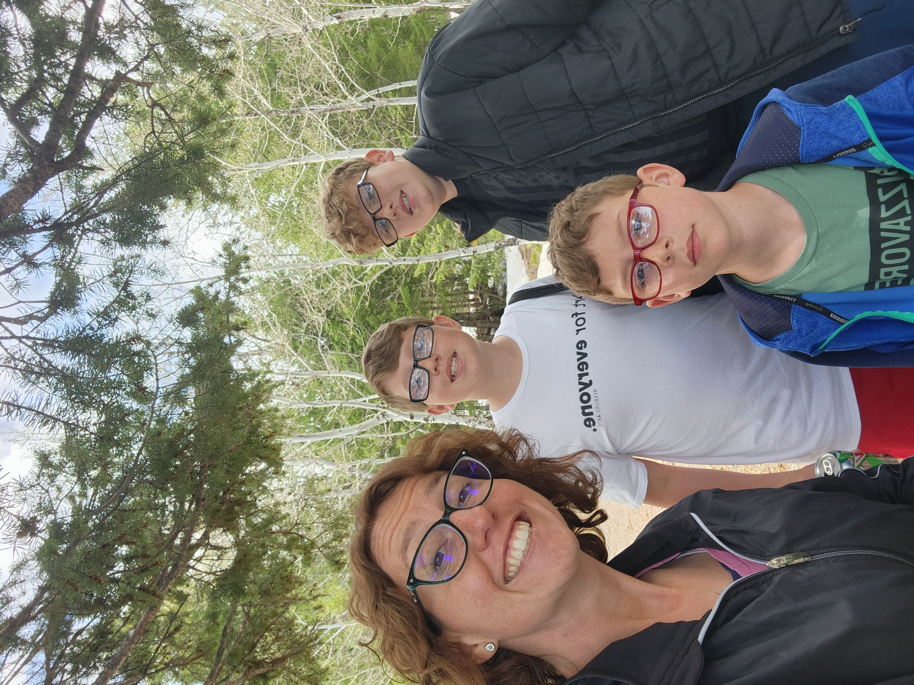

Tammi Enkey | WDD 130
Hello everyone! I'm Tammi Enkey. I live in Rexburg with my three sons who are Joseph, Samuel, and Malachi. They go by Joe, Sam, and Kai. I'm originally from Albertson, North Carolina. It's a small town in the middle of no where. It's a farming community. The people there are just so good and willing to give anyone the shirt off of their back. My grandparents had the largest family in the area so the town is full of a lot of my family members.
I love going on adventures in the outdoors with my boys. We enjoy hiking, camping, kayaking, swimming, sledding, cross-country skiing, going to parks, having picnics, visiting national parks, and so much more. Aside from spending a lot of time with my kids, I also enjoy dancing, listening to general conference on long walks, teaching the four year olds in primary, spending time with friends, helping others, and just living life.
I have a strong testimony of my Savior, Jesus Christ. You never know how much you need Him until you experience tragedy. He's been at my side every step of the way. I chose to turn to Him during my darkest moments and I'll never regret it. He truly is the answer to everything. He has my heart and always will! I'm so grateful for my testimony and for the strength that it gives me each day to just keep doing the best that I can.